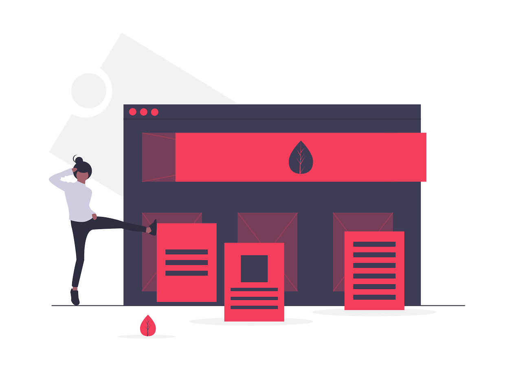

Horizon Theme for Bootstrap

Build responsive, mobile-first projects on the web with the Horizon Theme and bootstrap.
Horizon Theme for Bootstrap is an open source toolkit for developing apps with HTML, CSS, and JS. Quickly prototype your ideas or build your entire app with our Sass variables and mixins, responsive grid system, extensive prebuilt components, and powerful plugins built on jQuery.
Currently v1.0